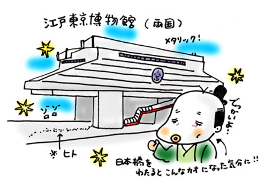

| 私は年の三分の一ほどを山のなかで暮らしている。
20代の終わりからだから、かれこれもう9年になる。
そもそもは、「山姥（ヤマンバ）」にあこがれての山暮らしだった。
当時の夢は、こうだ。
年をとったら、鬱蒼とした林に囲まれたこの小さなボロ家で、ひとり毎日クッキーを焼く。だんごをこねてもいいだろう。そして学校帰りの子どもたちを招き、いっしょにお茶を飲む。どうぞ森のリスさんも鹿さんもご一緒にぃ、なんて声をかけて…という「ちょっと改心したヤマンバ」になるのが夢だった。
しかし最近は、ケータイの電波もよく入るようになったし、まわりにこじゃれた家も増え、夜も明るくなった。
ヤマンバ、あやうし。
と、少しがっかりしながらも、キジのケーン、ケーンという鳴き声をココロの支えに、小さな畑をがしがし耕している。
さてヤマンバになりたいというそんな夢を他人にはついぞ話したことはなかったが、私が山に行くと、「ヤマンバ生活はいかが?」とメールをくれる、妙にカンのいい友人がいる。
ちなみに彼女は、年の七分の三ほどを海辺で暮らしているので、私は「汐招き（シオマネキ）」（妖怪）と呼んでいる。
ある日、シオマネキがヤマンバの家に遊びに来た。
シオマネキは、山に落ちているどんぐりを拾ったり、肉をむしゃむしゃ食べたり、近所に湧く温泉の露天風呂で自慢のウエストのくびれを見せてくれたりと、たいそう楽しんでいた。
…と、私は思っていたのだが、シオマネキは「はやく帰りたいよお」と思っていたらしい。時効だろうと思ったのか、言いにくかったのか、ずいぶん時間がたってからぽつりと教えてくれた。
じつはそのとき、うちで「亡霊」にうなされたらしい。
それは、シオマネキがリビングのソファーで寝ていたときのことだった。
ふと目を覚ますと、ほっかむりをした農兵たちに囲まれていた。問答無用、彼らはいっせいにやりを構え、「えい、えい」と突いてくる。
「江戸時代あたりかなぁ、よわ〜いかんじの足軽だったなぁ〜」
と、シオマネキはうれしそうに目を細めて言った。
え、江戸時代?
「あ、でも通りすがりみたいだったから、だいじょうぶ」
とも慰められた。
私は、幽霊なんてものは信じていないが、そう言われると、ソファでごろごろしているとき、自室で仕事をしているとき、ふと、ほっかむりをした足軽たちにやりで「えい、えい」と突かれているような気がしないでもない。しかし、実際にそうだったとしても、あまり怖いとは思えず、どこか不思議な感覚が残った。
その感覚がなんであったかわかったのは「江戸東京博物館」を訪れたときだった。
都営大江戸線両国駅の真上に建つ巨大な近代建築。そのなかには江戸がぎっしり詰まっている。いったい誰がそう思うだろう。入り口から6階までのびるエスカレーターは、すっぽりと透明のトンネルに包まれている。こどもの頃に夢描いていた未来都市のエスカレーターそのものだ。やっぱりこれが江戸につながるとは、思いも寄らない。
展示場には、19世紀前半の木組みの日本橋が再現されていて、江戸時代の町人になったような気分で歩くことができる。なんとなく口が曲がり、ひょっとこ顔になったような気がしながら往復した。
ミニチュア江戸城のまわりでは、将軍の拝えつの儀式がテレビモニターのなかで繰り返されていた。これは時代劇で見たことがあるぞ。臣下たちがひれ伏しているなか、ふすまがぱんぱんぱーんとひらいて、将軍様のおな〜り、だ。この臣下のなかには、「いつの日か、我こそ天下人たらん!」ときな臭い野望をもつヤツらがきっとまぎれこんでいるに違いない。
外国人観光客が多く、会場には英語や韓国語が行き交っていた。雰囲気からして皆、感心している風だった。つられて私も感心しつつ、不思議な感覚に包まれた。
江戸にとっぷりと浸れるこの空間の居心地の良さは、いったい何だろう。
ふと、我が家にあらわれた亡霊たちを思い出した。
江戸時代の亡霊がいる、と言われたときに抱いた感覚とよく似ていたからだ。
近代的な博物館で江戸の歴史にふれたときのように、「自分が江戸時代と同居していた」ことにココロがゆるりとほぐれたのだった。
ちょっと得した気さえしていたのだろう。
江戸時代から続く老舗、たとえば「文政5年創業の蒲焼き」や「文化12年創業の製茶」などにも、我が家の亡霊たちと同じような時代を超越して出会ったうれしさを感じる。
現身（うつしみ）で味わえる江戸は、魂の伝承にほかならないのだ。

|